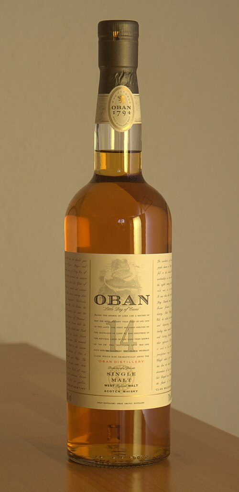
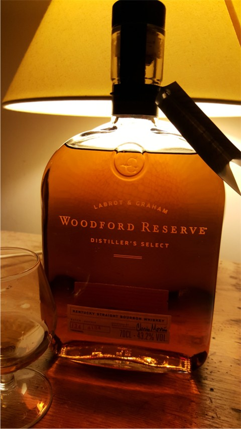
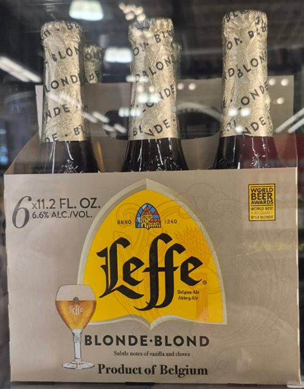

Every recommended bottle in one place: 11 single malt Scotches, 10 bourbons, 6 wines and 4 beers, with the style of each at a glance. Open any page for full tasting notes and tips.
Part 1
Single Malt Scotch
From gentle and fruity to rich, sherried, and smoky.
01

Oban 14 Year Old
West Highlands · 43% ABV
A beautifully balanced West Highland malt. Orange peel, sea salt, and gentle smoke, followed by honey, ripe fruit, malt, and a touch of spice. Creamy texture and a long, warming finish with oak and dried fruit. Complexity without overwhelming peat.
Light, elegant, and fruit-forward. Citrus, peach, and vanilla lead into creamy vanilla, honey, orange, and soft stone fruit. The finish is gentle, clean, and slightly sweet. An excellent introduction to single malt Scotch.
Matured in traditional oak, then finished in sherry casks. Honey, vanilla, dried fruit, toasted nuts, and gentle cinnamon. Smooth and rounded, with a lingering finish of sweet spice and oak.
Full-bodied with a pronounced sherry-cask personality. Raisins, dark fruit, and spice develop into chocolate, orange, cinnamon, toasted oak, and dried fruit. Velvety, with a long, warming finish.
A luxurious Highland malt with rich sherry-cask influence. Orange zest, cinnamon, nutmeg, and dried fruit on the nose, then dark chocolate, caramel, vanilla, and warming spice. Full and rounded, finishing with citrus and oak.
Mature, polished, and exceptionally approachable. Baked apple, dried apricot, and oak lead into cinnamon, toffee, vanilla, and gentle spice. Extended maturation brings deeper oak and a smooth, lingering finish.
A classic Islay with unmistakable character. Campfire smoke, seaweed, and iodine give way to dried fruit, malt, dark chocolate, and oak. Surprisingly smooth despite bold peat, with a long, smoky, salty finish. A benchmark for traditional peated Scotch.
Big, intense, and unapologetically smoky. Deep peat and wood smoke mingle with espresso, dark chocolate, raisins, molasses, and rich sherry notes. A powerful mouthfeel and a long, complex finish.
One of the most distinctive Scotches available. Medicinal peat, iodine, sea salt, and smoke lead into earthy smoke, vanilla, barley, and a touch of sweetness. The finish is dry, maritime, and persistent.
A rugged coastal malt. Briny sea air, gentle smoke, malt, and citrus with a distinctive black-pepper kick. Balanced between sweetness, salt, and spice, with a warming, smoky finish.
A classic, gentle Speyside malt bottled by Justerini & Brooks from the 1984 distilling season. Light and elegant: malt, honey, soft orchard fruit, a touch of dried grass and vanilla, with a clean, easy finish. Knockando is known for dating its bottles by season rather than by batch.
From sweet and approachable to barrel-proof and oak-driven.
01

Woodford Reserve Double Oaked
Kentucky · 90.4 proof
Rich, sweet, and exceptionally approachable. A second maturation in a deeply toasted, lightly charred oak barrel creates layers of caramel, vanilla, maple syrup, toasted marshmallow, and dark chocolate. Prominent oak balanced by creamy sweetness.
Beautifully structured with a more complex, spicy personality. Ripe fruit, floral notes, and vanilla lead into caramel, cinnamon, toasted oak, and subtle rye spice. Flavorful without being overly sweet, with a long, warming finish.
A bold barrel-proof bourbon that delivers substantial flavor. Brown sugar, caramel, vanilla, toasted oak, cinnamon, and dark fruit, with a long finish of pepper, spice, and lingering sweetness. A serious sipper.
A mature, traditional bourbon emphasizing oak and balance. Vanilla, caramel, toasted nuts, and gentle leather develop into cinnamon, baking spice, and charred oak. More developed than many entry-level bourbons, with sweetness in check.
Powerful and uncompromising, bottled straight from the barrel without dilution. Caramel, dark chocolate, toasted oak, vanilla, and baking spices dominate, with each release showing its own personality. A few drops of water reveal fruit and sweetness.
A robust, oak-forward bourbon with real maturity. Deep caramel, vanilla, roasted nuts, brown sugar, and seasoned oak open into baking spice, a tobacco-like dryness, and a touch of sweetness. The longer finish blends oak, spice, and caramel.
A softer, sweeter high-strength bourbon thanks to its wheat-based recipe. Vanilla, caramel, honey, and baked pastry balanced by cinnamon and gentle oak. Full and warming, surprisingly approachable for its proof.
A traditional single-barrel bourbon with distinctive maturity. Caramel, vanilla, toasted oak, and light fruit lead into cinnamon, pepper, and a little leather. A dry, warm, oak-driven finish and a classic expression of Kentucky bourbon.
Starlight Carl T. Huber’s Single Barrel (Calvados Finish)
Indiana · 115.8 proof (barrel 21-2218) · about 4.5 years
A cask-strength single barrel from Indiana’s Starlight Distillery, finished in calvados (apple brandy) barrels. Expect baked apple and pear over caramel, vanilla, and oak, with a rich, warming finish. This bottling was a private barrel selection by McFarland Wine & Spirits / Georgia Liquor Barn.
Best for: adventurous sippers who like single barrel, high-proof pours
A dependable Heaven Hill staple blended from a small number of barrels. Notes of vanilla, caramel, toasted oak, and warm spice, with a smooth, slightly nutty finish. The label carries the “1789” date honoring Rev. Elijah Craig.
Best for: everyday sipping and cocktails with real backbone
A Tuscan red from Tommasi Family Estates that pairs Sangiovese’s bright cherry and savory herbs with Cabernet’s structure. Expect dark cherry, plum, a touch of spice and firm but friendly tannins.
Best for: pasta, grilled meats, and Italian dinners
Veneto, Italy · Corvina-based blend · producer not shown on the label photo
Ripasso is Valpolicella re-fermented on the pomace left from Amarone, which adds body, depth and a hint of dried-fruit richness. Typical notes are cherry, plum, cocoa and gentle spice with a smooth, savory finish. Often called “baby Amarone.”
Best for: a step up from everyday red without Amarone prices
F. Stephen Millier Black Label “Red Angel Red” 2023
Calaveras County, California · red blend
A small-production California red from the Sierra foothills. Expect ripe dark fruit, a little spice and a smooth, medium-bodied finish typical of Calaveras County reds.
Best for: a distinctive, small-winery bottle to share
A bold Cabernet aged in used bourbon barrels, which adds vanilla, caramel, toasted oak and a hint of smoke over blackberry and dark cherry. A natural bridge between wine and whiskey lovers.
Best for: bourbon fans exploring wine; steak and BBQ
A Belgian blonde, local lager, Bavarian wheat and a Vermont Märzen.
01

Leffe Blonde
Belgium · abbey blonde ale · about 6.6% ABV
A classic Belgian abbey-style blonde. Golden and lightly sweet with banana, clove, honey and a touch of citrus, finishing smooth with gentle bitterness.
Best for: a gateway into Belgian beer; chicken and seafood
Many bottle photos are my own; the rest are free-licensed images from Wikimedia Commons, with credits on each full page. Where a photo shows a different age statement or bottling from the one listed, it is marked as a representative bottle. Please drink responsibly. 21+ (US).